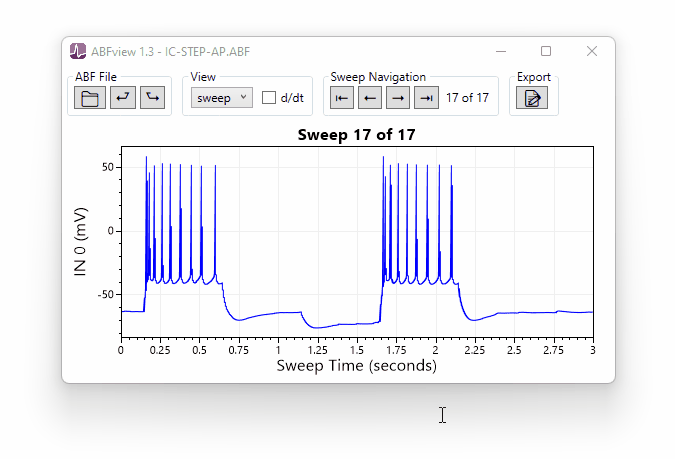

ABFview is an electrophysiology data viewer for Axon Binary Format (ABF) files.
ABFview is a minimal ABF file viewer.
Unlike ClampFit, ABFview does not need to be installed to run, and it does not lock ABF files
while viewing them.
